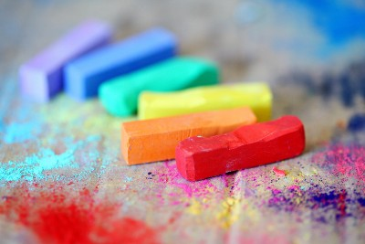

Digital Drawing
Key Events
- 1960- Artists started to experiment
- 1965- First digitsl art made
- 1967- More experiments, more groundwork
- 1970- Technology improves, colored graphic on personal computers
- 1979- Moderm, digital signals, widespread data transfer, ultimatly the internet
- 1980- The term digital art came into use, computer engineers created a paint program known as AARON
- 1985- Digital art used to help advertise computer
- 1990- Technology improves, internet widespread
- 2000- Increase in internet usage, artist began to try digital art as a way to expand creativity.
